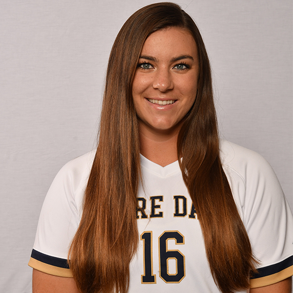

Hi my name is Cait Brooks, and I am a student in the college of Arts and Letters at the University of Notre Dame. I am a Film, Television, Theatre major, and a Collaborative Innovation minor. I am Burbank, California and am very passionate about the state of California, and plan of living there as soon as I am finished with my degree from this rigorous university. My main passion and focus of this website is to showcase the student projects that I have worked on during my time in the Film and Television major. My work consists of short videos all with different purposes. I am passionate about haveing meaning behind some of my work, but I also like to bring in humor and excitement in my work. I am a student-athlete at this university, and like to showcase my athletic side. I am a fan of sports and thoroughly enjoy showing off the athletic side of the university through some of my films. All of these were for class projects, and if you click on them you can see what the process of them was and the final creations on youtube.